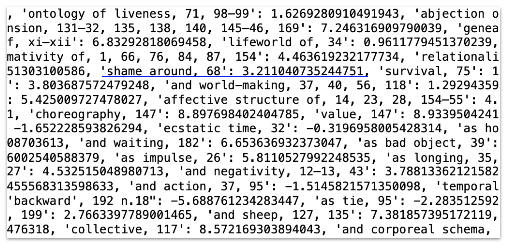

Project description:
a python generator that produces speculative indexes to non-existent texts through spatial representation of textual data with NLP
Combining text processing, generation and NLP techniques in Python to uncover structural and semantic features of a text, the project explores the genre of the index as an infrastructure for containing information and a mechanism that maps cross references (much like a hyperlink), creating associative relations between things. indexes composed of subentries, where subentries can be viewed textual nodes which are joined by referential links
My corpus was comprised of the indexes of 3 books ( Michel Foucault - History of Sexuality Volume 1, Jose Muñoz - Cruising Utopia, and Sara Ahmed - Queer Phenomenology) as well as some phrases from my notebook.
Method:
1. pre-processing corpus. parse .txt files to make their structures uniform, then reassemble
2. processing corpus. create a vector for each textual sequence in the corpus
use t-SNE (t-distributed stochastic neighbor embedding) to reduce the dimensionality of each vector
save the x-values of t-SNE visualization of vectors in 2-d space as an array, map it to a better range

3. generating. with tracery grammar
the position of each subentry on the page is determined by the x-position of the vectors in 2-d space as determined by t-SNE
cc
Allison Parrish - Reading and Writing Electronic Text, Tracery,